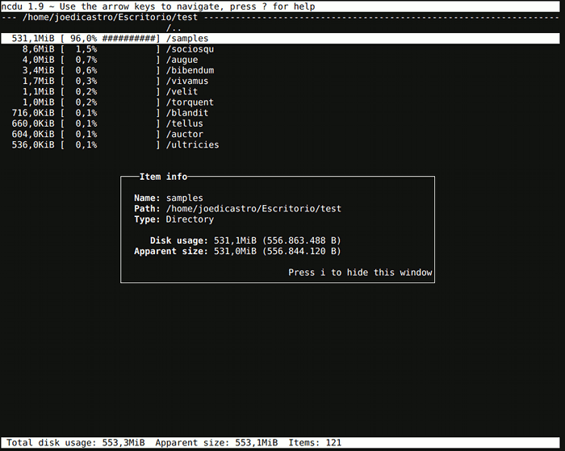

Esta es una pequeña aplicación que sigue la máxima de Doug Mcllroy que acabaría resumiendo la filosofía Unix "Escribe programas que hagan una sola cosa y que la hagan bien". Y siguiendo la línea de los programas que engloban esta serie de productividad sobre Linux, es un programa de consola que se maneja íntegramente con el teclado, y donde además los atajos están inspirados en los de Vim.
Ncdu
Ncdu es un acrónimo para "NCurses Disk Usage", es decir, "Uso de disco con interfaz ncurses". Lo que pretendía Yoran Heling, su autor, cuando creo ncdu, era obtener un analizador de uso de disco en consola que fuera lo suficientemente ligero para poder emplearlo en un servidor remoto a través de ssh. El gran acierto fue emplear la interfaz ncurses para poder navegar por los directorios con extrema facilidad al mismo tiempo que se presentaba la información en un formato legible y amigable. El segundo y no menos importante acierto, es emplear los conocidos atajos de teclado de Vim para navegar entre los directorios.
El resultado es un analizador de ocupación de disco que es realmente útil, agradable de utilizar y que es tan rápido y ligero que se puede emplear sin interfaz gráfica y en maquinas remotas. Es una gran ayuda para los administradores de sistemas, que hasta ahora nos teníamos que pelear con otras herramientas bastante menos agradables. Es la típica herramienta que cuando la utilizas por primera vez piensas ¿Por qué demonios no la habría encontrado antes?

Como se puede ver la interfaz es muy limpia y carece de elementos superfluos que
nos distraigan de lo importante, un pecado que cometen algunas de las
aplicaciones gráficas más famosas, que cuentan con unos gráficos muy bonitos,
pero realmente no demasiado útiles. Es sencillisima de emplear una vez que
conoces los atajos y cuenta con ayuda integrada a la que se accede pulsando
?. Incluso para aquellos que no están acostumbrados a navegar empleando
las típicas teclas de vim (h, j, k, l), se pueden utilizar las
teclas de dirección.
Características
Un programa de este tipo no necesita una funcionalidad muy elevada, pero destacare aquí algunas de las posibilidades que nos ofrece:
- Podemos ordenar los directorios/ficheros en función de su nombre o de su tamaño y en orden ascendente o descendente
- Se pueden eliminar directamente ficheros o directorios desde la aplicación, aunque también podemos iniciarla en modo solo lectura para prevenir borrados accidentales
- Se muestra o no, el porcentaje de espacio ocupado de forma gráfica y/o numérica
- El espacio empleado en disco puede hacer referencia al real o al aparente
- Los directorios y ficheros ocultos pueden ser o no mostrados
- Nos permite recalcular el espacio ocupado de un directorio concreto sin necesidad de volver a recalcular todo
- Tenemos la posibilidad de volcar la información a un archivo, que puede también ser leído por el mismo programa
- Es posible mostrar la información de un elemento individual en un cuadro emergente
La verdad es que lo único que hecho en falta en el programa es quizás un poco de color para distinguir entre ficheros y directorios de forma más visual. Por lo demás, es muy rápido calculando el espacio, no he hecho una comparación directa, pero me parece ligeramente más rápido que Baobab.
Alternativas
Existen varias alternativas decentes como aplicaciones gráficas, como los conocidos Baobab (que viene con las herramientas de Gnome) o JDiskReport. Después existen múltiples alternativas tanto en modo gráfico como en modo consola que, sinceramente, no puedo recomendar a nadie, bien porque son más vistosos que prácticos o bien porque son directamente insufribles. Existe una alternativa en modo texto que algunos prefieren a ncdu que es gt5.
Comentarios !